CATALINOCatalino Tattoo, Ponta Delgada
Realismo ✖ Blackwork ✖ Anime · Ponta Delgada, Açores
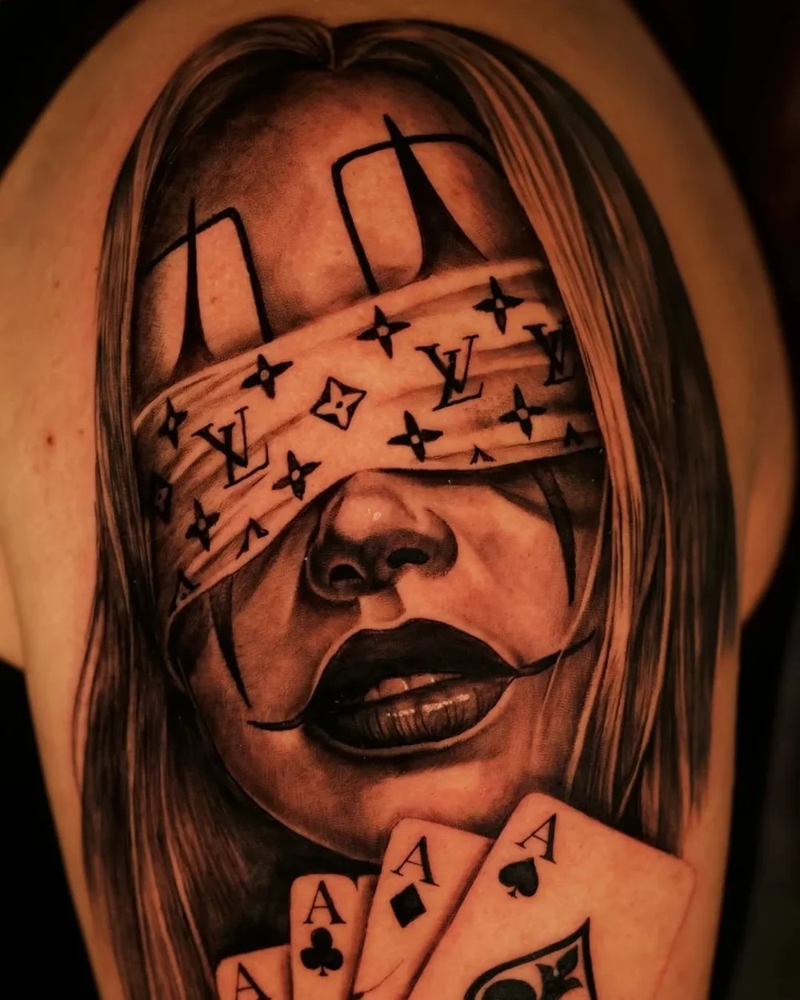
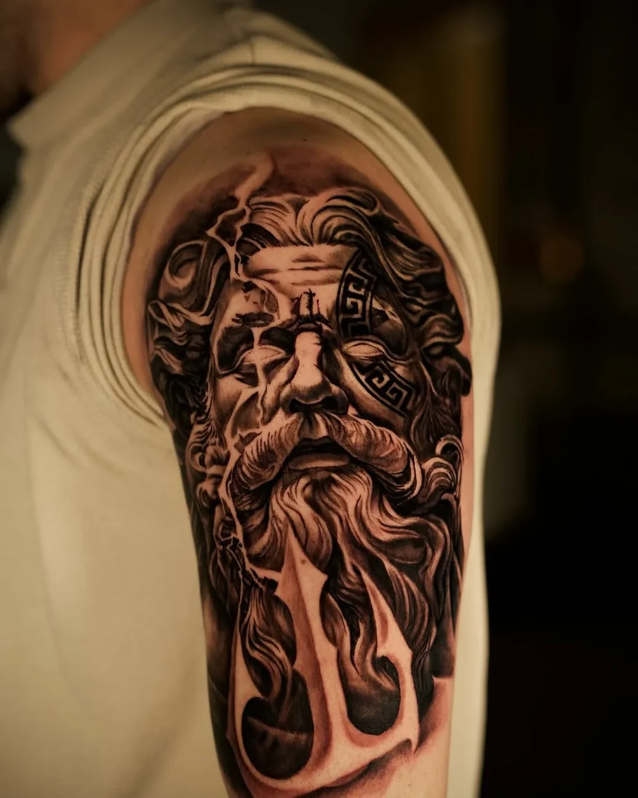
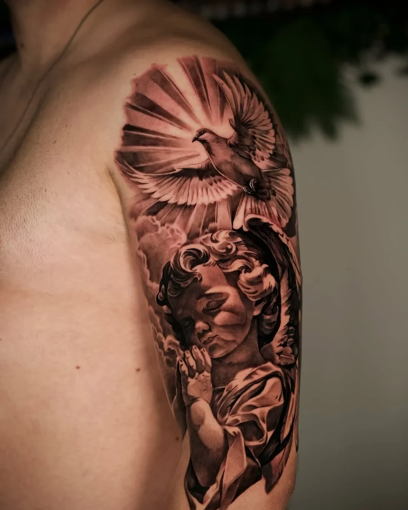
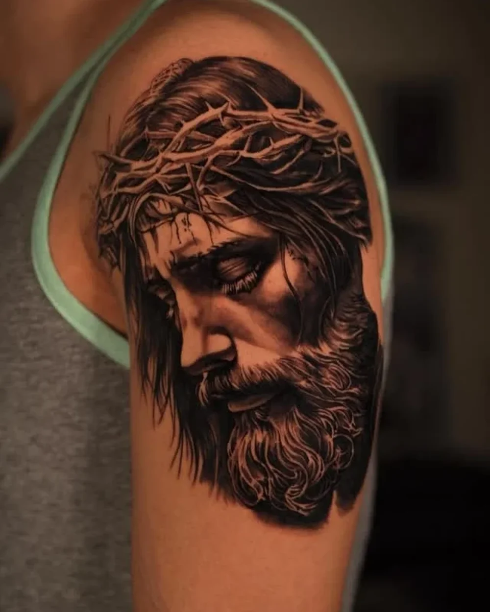
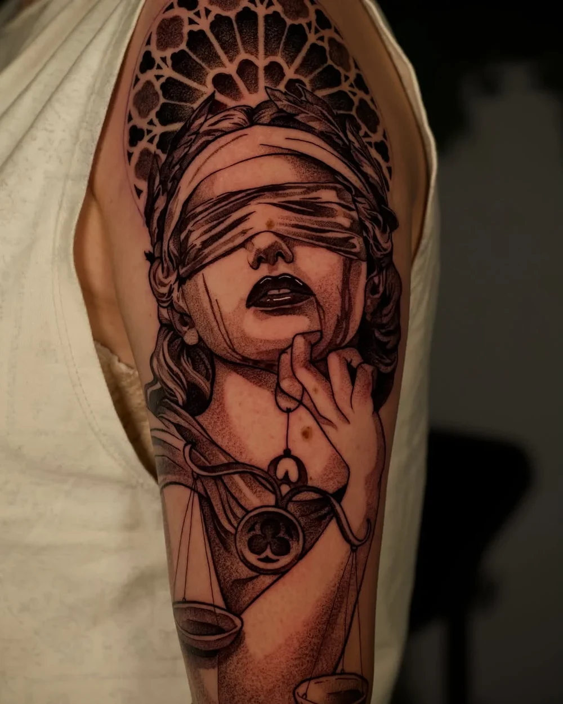
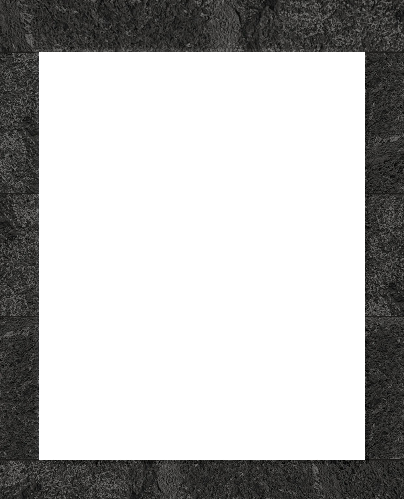
Rainha de copas
Trabalhos
Realismo a preto e cinza, anime, cinema e retratos. Cada peça desenhada de raiz a partir da ideia de quem a leva.
Do traço à pele
Um back piece de mitologia grega, sessão a sessão. Primeiro as linhas, depois a sombra, camada a camada, até cada detalhe contar a sua parte da história.
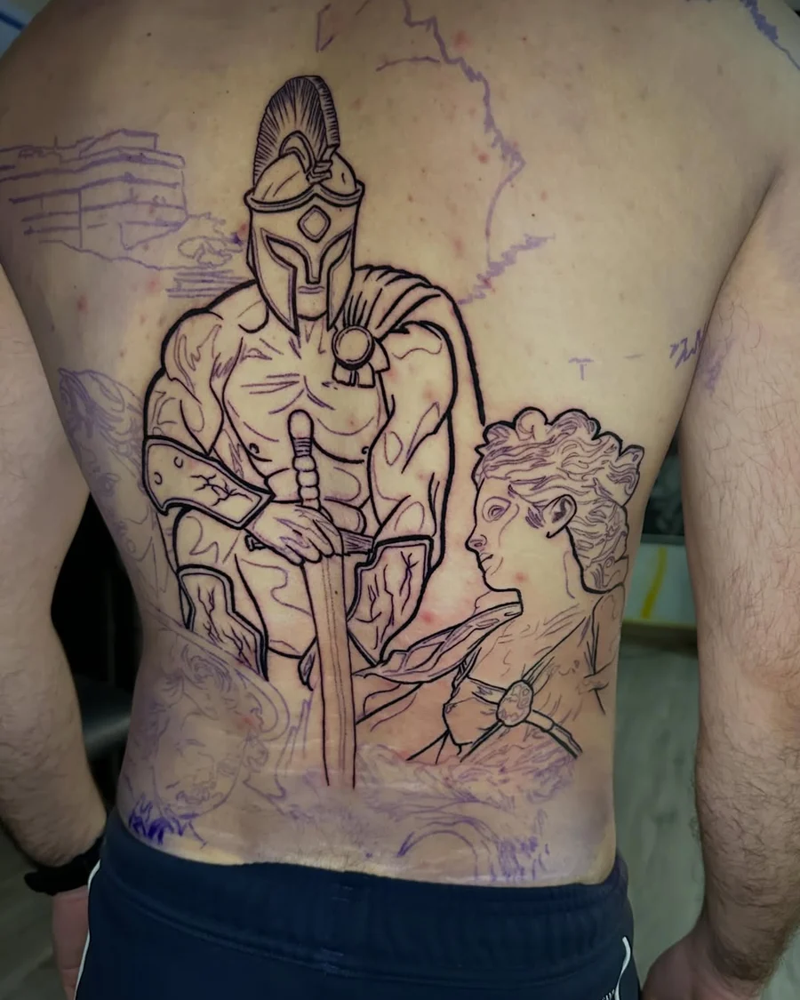
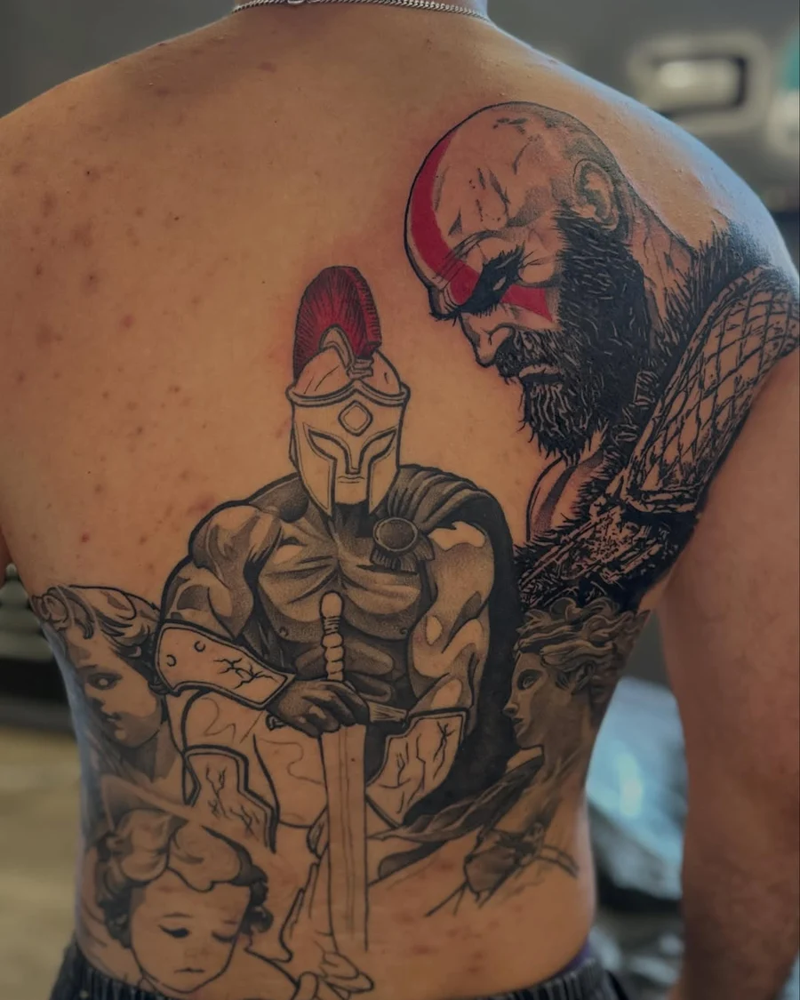
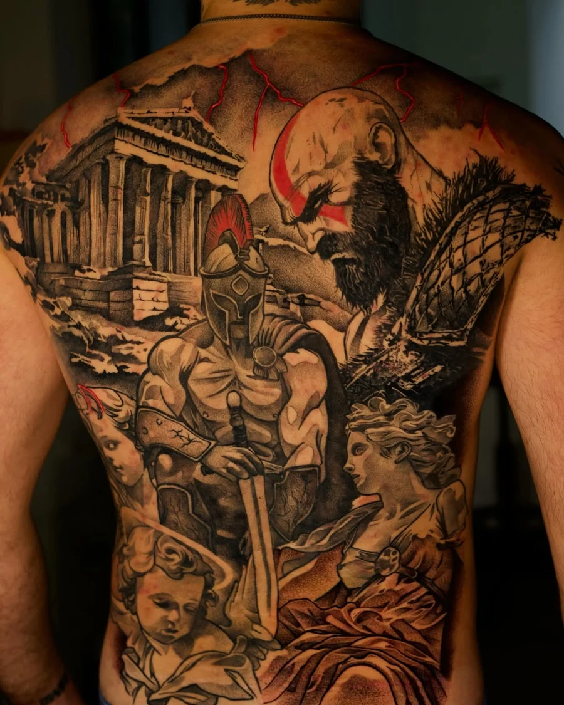
Convenções e guest
Dos Açores para os palcos da tatuagem. Primeiro tatuador confirmado na Oporto Tattoo 2027.
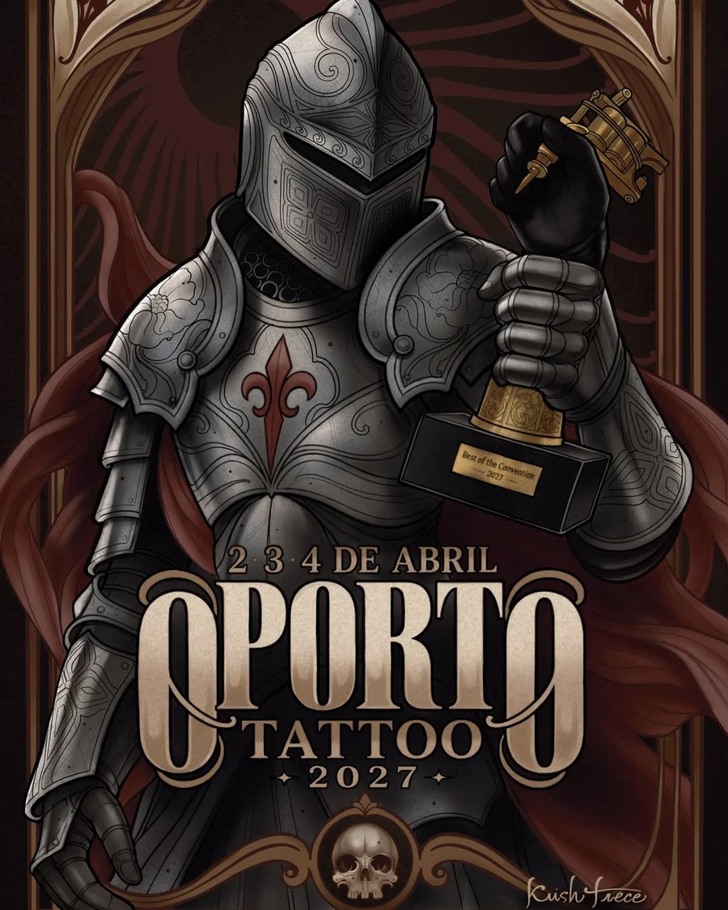
Oporto Tattoo
Porto · 2025 e 2026. Primeiro artista confirmado para a edição de 2027.
Lisbon Tattoo Rock Fest
Lisboa · 2023 e 2024. Uma manga do Senhor dos Anéis em 22 horas, nos três dias da convenção.
Waregem Tattoo Convention
Bélgica · 2025. Sasuke feito na convenção.
Unicorn Ink
Estados Unidos · 2024. Doze dias como artista convidado.
Sobre o Catalino
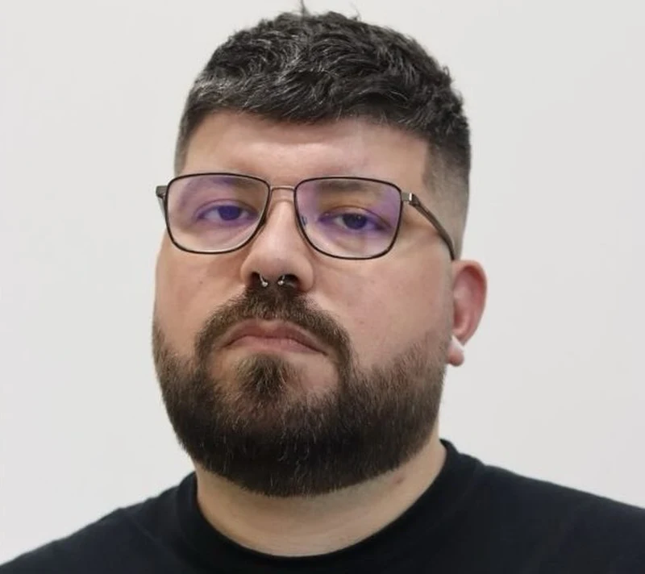
“Cada tattoo é troca, evolução e história partilhadas.”
Catalino tatua em Ponta Delgada, na ilha de São Miguel. Trabalha sobretudo em realismo a preto e cinza, das figuras religiosas e da mitologia aos retratos de família, e leva o mesmo rigor ao anime e ao universo geek de que é fã.
Em 2025 abriu as portas do Ink Point Tattoo Studio, um estúdio de família: ele na tatuagem, a Sara Catalino no piercing e no laser. Dá workshops de tatuagem e de cuidados e segurança, e é patrocinado pela Moody Tattoo Products.
- Oporto Tattoo 2027Primeiro tatuador confirmado
- Tattoo WorldReportagem na revista
- WorkshopsPara tatuadores e para o público
- Sessões longasMangas e costas em poucos dias
Ink Point Tattoo Studio
A porta de cantaria na Rua do Dr. Guilherme Poças. Café, água fresca e tempo para conversar sobre a tua ideia.
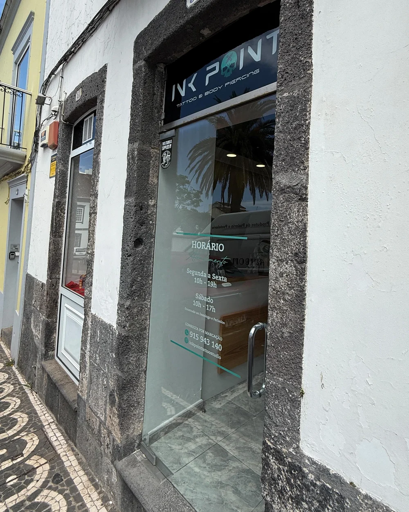
Morada
Rua do Dr. Guilherme Poças, 53
9500-057 Ponta Delgada
São Miguel, Açores
Horário
Segunda a sexta, 10h às 19h
Sábado, 10h às 17h
Sempre com marcação
No estúdio
Tatuagem com o Catalino · Piercing e laser com a Sara Catalino
Faz a tua marcação
Terás um projeto original e único, com base nas tuas ideias.
Conta a ideia
Descreve o que imaginas e junta imagens de referência.
Mostra o local
Uma foto do sítio do corpo onde queres a tatuagem.
Diz o tamanho
A medida aproximada em centímetros.
Recebe o projeto
O Catalino responde com o orçamento e a data.